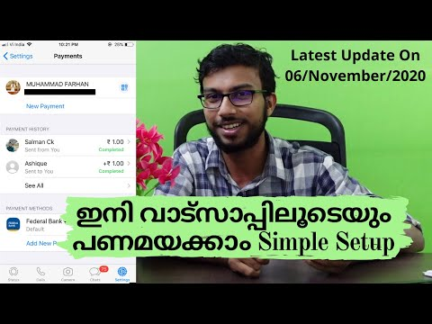
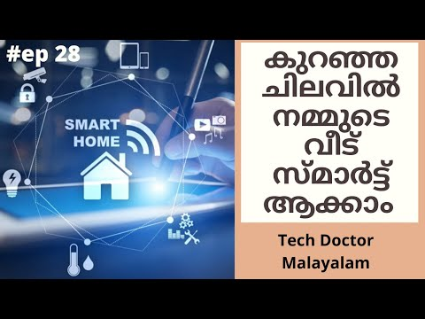
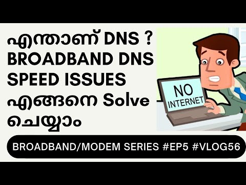
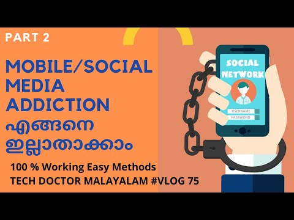

menu
search
mic
videocam
apps
notifications
account_circle
home
Home
local_fire_department
Trending
subscriptions
Subscriptions
library_add_check
Library
history
History
play_arrow
Your Videos
watch_later
Watch Later
thumb_up
Liked Videos
Recommended
BSNL VOICE / VOIP Configuration Malayalam, BSNL Kerala Voice ...
Tech Doctor Malayalam
10K Views • 1 year ago
Bridge Mode Configure ചെയ്യാൻ പഠിച്ചാലോ ? How to configure Dial ...
Tech Doctor Malayalam
5.1K Views • 2 years ago

How to Setup WhatsApp Payment in Malayalam | Send money using...
Tech Doctor Malayalam
825 Views • 2 years ago
How to Download Corona Covid Vaccine Certificate Malayalam ...
Tech Doctor Malayalam
10K Views • 1 year ago
How to Setup Multiple ISP Internet Connection in one single ONT ONU ...
Tech Doctor Malayalam
7K Views • 2 years ago

ലോകത്ത് എവിടെ നിന്നും വീട് control ചെയ്യാം| Smart Home Automation ...
Tech Doctor Malayalam
20K Views • 2 years ago

How to Solve Speed Issue Malayalam | Solve DNS Issue in Malayalam ...
Tech Doctor Malayalam
4K Views • 2 years ago

MOBILE Phone / Social Media ADDICTION എങ്ങനെ ഇല്ലാതാക്കാം ...
Tech Doctor Malayalam
5K Views • 2 years ago
ഇക്കാര്യം ശ്രദ്ധിച്ചില്ലെങ്കിൽ ഇലക്ഷനിൽ വോട്ട് ചെയ്യാൻ പറ്റില്ല how to add name ...
Tech Doctor Malayalam
9K Views • 2 years ago
വോട്ടർ പട്ടികയിൽ പേര് ഉണ്ടോ എന്ന് എങ്ങനെ പരിശോധിക്കാം How to Check ...
Tech Doctor Malayalam
20K Views • 2 years ago
How to change BSNL Broadband FTTH Plan Selfcare Portal Malayalam ...
Tech Doctor Malayalam
4K Views • 2 years ago
BSNL Broadband Selfcare Account Creation എങ്ങനെ സിമ്പിളായി തുടങ്ങാം ? ...
Tech Doctor Malayalam
3K Views • 2 years ago